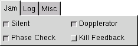

Jamming
MindGuard actively jams incoming psychotronic signals across the entire electromagnetic spectrum and relevant sonic and psionic ranges as long as the program is running. No attempt to decipher the signals is made; signals are just identified as such and the appropriate anti-signals are generated to cancel their effects.
If a signal can't be jammed outright, it will be scrambled using a randomizing algorithm appropriate for the carrier, leaving it psychotronically inert.
The jamming options are found under the Jam Tab in the main window. Jamming options are as follows:
Silent
Don't display diagnostic information on carrier hits or display any auto deciphered messages. Use this if you want MindGuard to do nothing but jam/scramble.Phase Check
Check for jam/carrier phase match on each iteration. Defeats phase shifting carriers.Dopplerator
Corrects jamming signal for doppler distortion of carrier signal. Useful if carrier source is a moving vector.Kill Feedback
Filters the scrambling signal from the detection stream. Useful in cases of heavy psychotronic activity, keeps the detection algorithms from missing hits.
For information on deciphering signals, see Scanning.